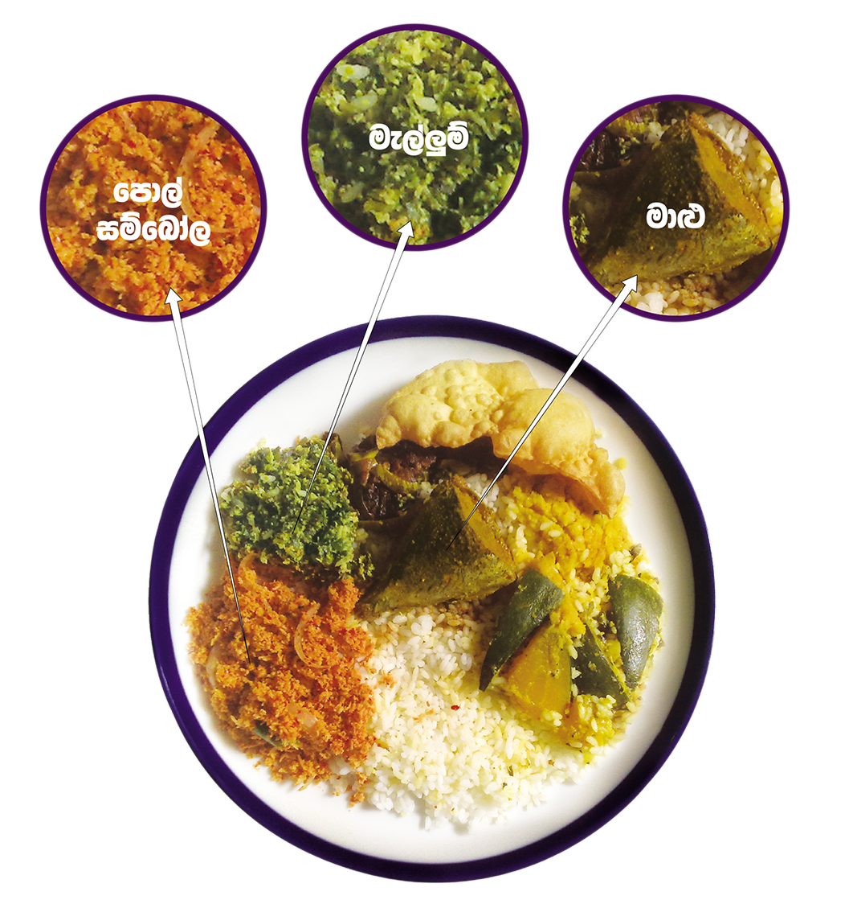

ආහාරවල ඇති යකඩ උරාගැනීම කෙරෙහි විවිධ සාධක බලපායී.යකඩවල ප්රභවය එයට බලපාන ප්රධාන කරුණකි. සත්ත්ව ප්රභවයන්ගෙන් (මාළු,මස්,පීකුදු)ලැබෙන හීම් යකඩ ඉතා හොඳින් රුධිරය උරා ගැනේ.ශාක ප්රභවයන්ගෙන් හා කිරි බිත්තර වලින් ලැබෙන හීම් නොවන යකඩ රුධිරය උරා ගැනීමේ ඇති හැකියාව අඩුය.
හීම් නොවන යකඩ රුධිරයට උරා ගැනීම වැඩි කිරිම සඳහා එම ආහාර වේළට හීම් අයන ඇතුලත් ආහාර සුළු වශයෙන් හෝ අඩංගු කිරිම හිතකරය.ඉට අමතරව යකඩඋරා ගැනීම වැඩි කිරිමට ,විටමින් Cඅඩංගු ආහාර (දෙහි ,දොඩම් තක්කාලි ආදිය)වැඩිපුර කැමට ගැනීම සුදුසුය.සමහර ආහාර වර්ග යකඩ උරා ගැනිම පහසු කරන අතර සමහර ඒවා යකඩ උරා ගැනිම ප්රමාද කර වළකයි.(කෑමෙන් පසු තේ සහ කෝපි පානය කිරිම යකඩ අවශේෂණය අඩුකරයී.
ඉහත සඳහන් ඒවාට අමතරව යකඩ ඌණතාවය අඩුකිරීම සඳහා පහත සඳහන් පියවර අනුගමනය කිරිමද උපකාරි වේ.